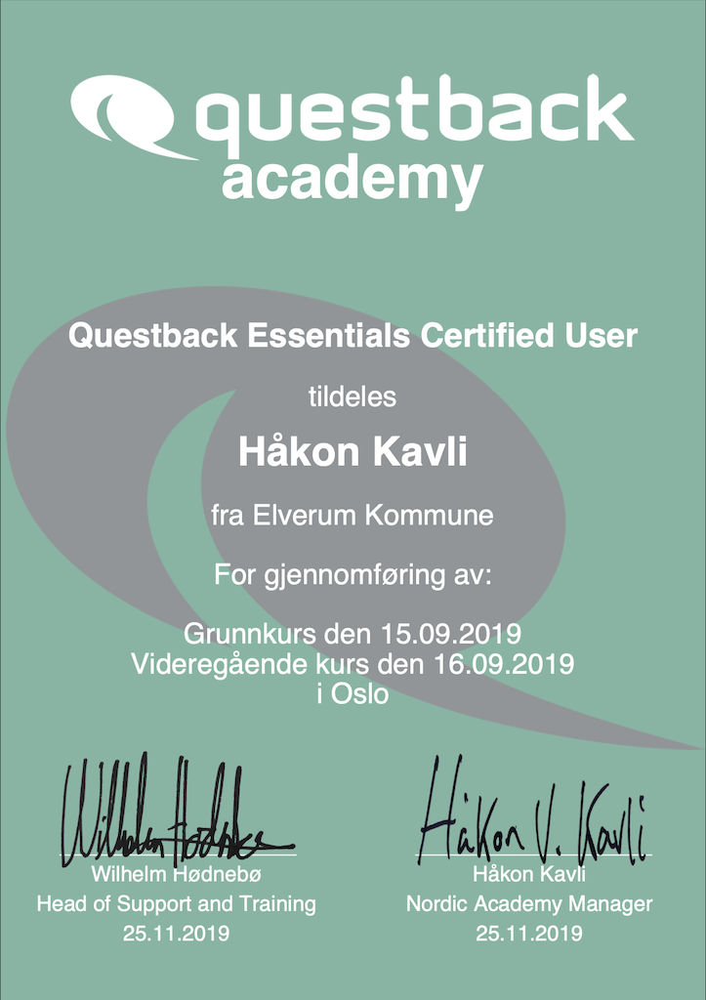
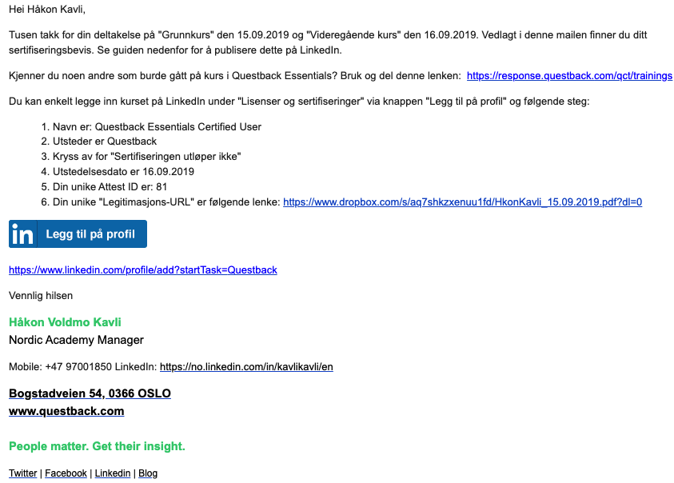

Tidslinje
Utdanning og arbeidserfaring
Klikk på grafen for flere detaljer!

Statviter og teknolog med interesse for læring, forbedring og
design.
Leder Questbacks satsning på brukersamfunn og opplæringsvirksomhet.
Klikk på grafen for flere detaljer!
Leder satsningen på Questbacks brukersamfunn Community globalt (vikariat til 01.09.2020) og opplæringsvirksomheten i Norden. Arbeidsoppgavene inkluderer webutvikling, innholdsproduksjon, videoproduksjon, kursadministrasjon, kursledelse. Jobber til daglig i Questbacks nordiske "Experience Team" med ansvar for teknisk støtte, samt planlegging og gjennomføring av markedsaktiviteter.
Mål for 2020: Styrke læringsopplevelsen på Community gjennom bedre videoinnhold, sømløst integrert med læringsartikler.
Rådgiver, innholdsprodusent og kursholder. Holdt månedlige klasseromskurs for nordiske kunder i verktøyene Essentials og EFS. Administrerte Chatboten "Questy" for Essentials. Svarte på spørsmål og lager hjelpeartikler i vårt Community.
Førstelinje IT-support for Questbacks kunder via mail og telefon. Løste kundehenvendelser angående funksjonalitet, samt tekniske og praktiske problemer knyttet til bruk av verktøyet Essentials. Øvrige oppgaver som utarbeiding av engelske FAQ-tekster, kursing, rapportering av bugs til utviklerne.
Deltok som datainnsamler for opprettelsen av en europeisk immatrialrettsindeks, på oppdrag for Europakommisjonen. Ansvarlig for innhenting og koding av informasjon fra lovtekster gjeldende i 1970, samt spore alle endringer til dags dato. Fullførte indeksen for Norge og Danmark. Fikk god kjennskap til norsk opphavsrettslovgivning
Butikkmedarbeider med låsansvar. Leder for kveldsskift og butikkansvarlig for øl og mineralvann. Oppfølging av kollegaer og utføring av daglige rutiner, kundebehandling, datokontroll mm.
Butikkmedarbeider med låsansvar. Leder for kveldsskift og butikkansvarlig for øl og mineralvann. Oppfølging av kollegaer og utføring av daglige rutiner, kundebehandling, datokontroll mm.
| Antall års erfaring | Nivå | |
|---|---|---|
| R | Viderekommen | |
| Questback Essentials | Ekspert | |
| Python | Viderekommen | |
| Java | Viderekommen | |
| PostgreSQL | Viderekommen | |
| Salesforce | Viderekommen | |
| Questback EFS | Ekspert | |
| HTML | Grunnleggende | |
| CSS | Grunnleggende | |
| JavaScript | Grunnleggende |
| Språk (Forklaring) | Nivå |
|---|---|
| Norsk | Morsmål |
| Engelsk | C2 |
| Svensk | C1 |
| Tysk | B1 |
| Russisk | A1 |
Høsten 2018 holdt jeg mine første kurs i bruk av Questback Essentials. Den største utfordringen kom i forberedelsene til kursene, nemlig å signere kursbevis til deltakerne for hånd. Jeg har aldri mestret skjønnskrift, og endte opp med å bruke over 30 minutter på å signere 5 kursbevis. Fra Januar 2019 hadde vi planlagt månedlige kurs i både Oslo og Stockholm, så jeg besluttet å lage et skript i Python for å effektivisere oppgaven.
Jeg startet med å undersøke biblioteker for å generere PDF-er, og landet på ReportLab. For å mate scriptet brukte jeg data fra kurspåmeldinger fra CRM-systemet vårt i Excelformat. Jeg lagde en løkke som iterte gjennom filen og genererte en PDF per deltaker. For å slippe mer manuelt arbeid hektet jeg på Dropbox sitt API slik at appen kunne lagre PDF-ene sikkert, permanent og oversiktlig i en egen mappe per kursdato.
- Eksempel på et sertifiseringsbevis
I neste omgang la jeg til en utvidelse for epostutsendelse for automatisk overlevering av kurs- og sertifiseringsbevisene, via Pythons standardbbibliotek. I hver enkelt epost la jeg ved kursbeviset som et vedlegg, samt knapp og instruksjoner til kursdeltakerne for hvordan de kunne legge til sertifiseringen på egen LinkedIn-profil.
Jeg fikk hjelp til å oversette tekstene på PDF-ene og i epostene, som jeg brukte i egne klasser for finske og svenske diplomer. Når alt var satt sammen, ble prosessen med signering og utsteding av kursbevis overstått i løpet av 2 minutter, uavhengig av antall deltakere. Appen har blitt brukt til å generere over 100 diplomer og sertifiseringsbevis per Januar 2020.
- Eksempel på et automatisk generert epost til kursdeltaker
Målet for kurset var å "hvordan forståelse av brukernes behov gir grunnlag for design, og hvordan prototyper og designforslag kan gi brukerne bedre grunnlag for å formulere sine behov". Vi ble bedt om å danne en gruppe, så planlegge og gjennomføre et prosjekt, der design av en digital prototype (uten skjerm) for og med en valgt brukergruppe var sentralt. Vår gruppe valgte folkebibliotekene i Oslo som domene og utviklet en prototype for å forbedre deres hentehyller.
I tidlig fase av prosjektet gjorde vi observasjon av biblioteksbrukere og ekspertintervjuer med biblioteksansatte for å lære mer om tilbudene og ulike utfordringer brukerne møter. I neste omgang ilandet vi på å forbedre "hentehyller", bibliotekes tilbud for å støtte avhenting av reservert materiale.

- Lavoppløselige skisser, for testing protypeideer
Vi gjennomførte prosjektet i syv iterasjoner. Vi designet en modulær prototype som lot oss skifte ut- og legge til nye deler og funksjoner mellom hver iterasjon. Via iterasjonene implementerte vi endringer ut ifra brukernes behov, slik vi hadde forstått dem fra brukertesting. Hver iterasjon endte i en evaluering med brukergruppen, som ga oss gode pekere for veien videre.

- Fra evaluering med brukere
Min rolle i prosjektet besto av oppgaver. Jeg virket som møteleder og referent i våre sprintmøter, bisto med datainnsamling (intervjuer/observasjon), brukertesting og rapportering. Jeg lærte mye om gruppearbeid, designprosessen og brukermedvirkning. Vi la ned utrolig mye arbeid, og ble veldig fornøyd med sluttproduktet. Den siste prototypen besto av tre Arduino Uno mikrokontrollere, to RFID-lesere, powerbanks og LED-lys med tilbehør:

- Sluttproduktet: Prototypen "Hentehylla"
Jeg trives best i naturen. På vinteren er jeg gjerne på ski og toppturer. På sommeren liker jeg turer, fiske og strandliv. Jeg er glad i trening, og praktiserer Yoga hver uke.
Jeg er interessert i politikk, rettferdighet og teknologi.